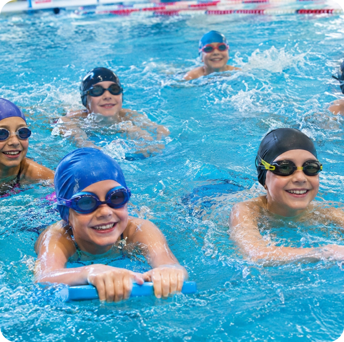

Vezeme 16 medailových umístění z VC Prostějova!
Na 23. Velké ceně města Prostějova 10. 10. 2026 reprezentovalo klub 22 plavců.
Datum12. 10. 2026
AutorJakub Čagánek, trenér
KategorieZávody
ProgramSportovní třídy

Celestina Kubalčíková vybojovala 5 medailí, z toho tři zlaté (200 m polohový závod, 200 m volný způsob a 100 m polohový závod). Pět medailí a pět osobních rekordů si odvezl také Jakub Juřík.
Na stupně vítězů dále vystoupali Jan Martinek, Amálie Blahová, Patrik Velísek a mužské kvarteto na 4× 50 m polohový závod. Ženské kvarteto ve složení Kubalčíková, Petrů, Mynářová a Bláhová skončilo těsně pod stupni vítězů, o jedinou setinu sekundy.
Do první desítky se probojovala řada dalších plavců a několik z nich si zaplavalo osobní rekord. Gratulujeme všem závodníkům!
Fotky ze závodu
